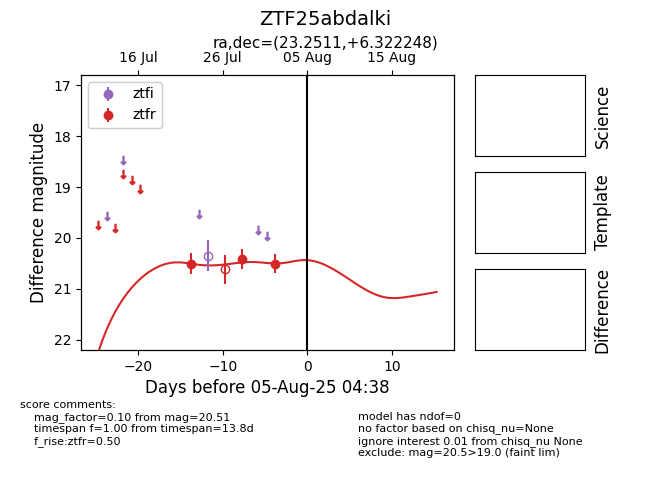

Target ZTF25abdalki at 2025-08-05 04:38, see:
FINK: fink-portal.org/ZTF25abdalki
Lasair: lasair-ztf.lsst.ac.uk/objects/ZTF25abdalki
ALeRCE: alerce.online/object/ZTF25abdalki
alt names
ZTF25abdalki (ztf,fink)
coordinates:
equatorial (ra, dec) = (23.2511,+6.32225)
galactic (l, b) = (141.1786,-55.07013)
photometry
last ztfr=20.51
3 ztfr detections
